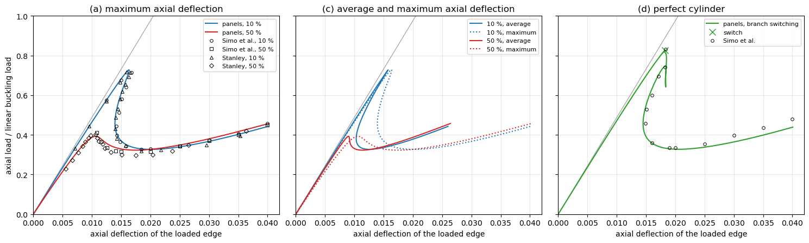
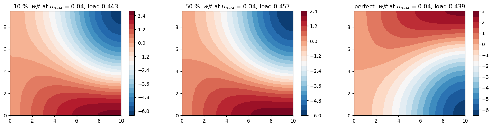

Post-buckling of an axially compressed cylinder: Simo, Fox and Rifai (1990)#
Simo, D. D. Fox and M. S. Rifai, On a stress resultant geometrically exact shell model. Part III: Computational aspects of the nonlinear theory, Computer Methods in Applied Mechanics and Engineering 79 (1990) 21-70, Section 6.3.4, “Post-buckling analysis of a simply-supported cylinder; effect of initial imperfections”, pp. 54-57, Fig. 6.3.4 on p. 56, with the results of G. M. Stanley, Continuum-based shell elements, PhD dissertation, Stanford University, 1985 (9-ANS elements).
A cylinder of radius \(R = 36\), length \(L = 100\), thickness \(t = 0.125\), \(E = 10^7\), \(\nu = 0.3\) (consistent units) under axial compression:
Fig. 6.3.4 (a): imperfections of 10 % and 50 % of \(t\) in the shape of the lowest linear buckling mode, load against the maximum axial deflection of the loaded edge, with Stanley’s points;
Fig. 6.3.4 (c): the same with the average axial deflection;
Fig. 6.3.4 (d): the perfect cylinder, traced by branch switching.
The loads are normalized by the linear buckling load. The values of the figure were read on the page rendered at 300 dpi with a grid drawn over the axes, with a precision of about \(\pm 0.0003\) in the deflection and \(\pm 0.01\) in the load; they are in simo1990_utils.py. The analyses run again at each execution, in about 3 min.
[1]:
%matplotlib inline
import numpy as np
import matplotlib.pyplot as plt
from IPython.display import Markdown, display
import simo1990_utils as su
from follower_utils import markdown_table
panels model#
As in Simo et al. and Stanley, an \(L/10 \times 15°\) section is modelled, with symmetry conditions on the interior edges and a simple support on the loaded edge: the lowest buckling mode is then the diamond mode of 5 axial half-waves and 12 circumferential waves, of which the section spans a quarter of an axial wave and half a circumferential one. It is one Shell of the model cylshell_clpt_donnell, \(a = L/10\) along \(x\), \(b = 15° R\) along \(y\), with
\(8 \times 8\) terms (converged: the limit loads change by less than 0.003 from \(8 \times 8\) to \(14 \times 14\) terms, see the documentation page ex_cylinder_postbuckling of structsolve), and the flags of Bardell’s functions:
Edge |
Condition |
Flags |
|---|---|---|
\(x = 0\), loaded |
simple support, \(v = w = 0\) |
|
\(x = a\) |
symmetry, \(u = v_{,x} = w_{,x} = 0\) |
|
\(y = 0\), \(y = b\) |
symmetry, \(u_{,y} = v = w_{,y} = 0\) |
|
The axial load \(N_{cl} = E t^2/(R\sqrt{3(1-\nu^2)})\) per unit length is applied at \(x = 0\) with add_distr_load_fixed_x, scaled by the lowest load multiplier of the linear buckling analysis, such that the load factor is the load normalized by the linear buckling load.
[2]:
s, lbd_cr, mode = su.build_shell(8, 8)
print('linear buckling load: %.5f N_cl, N_cl = %.1f' % (lbd_cr, su.N_CL))
fig, ax = plt.subplots(figsize=(4.5, 4))
s.uvw(mode, gridx=60, gridy=60)
cf = ax.contourf(s.plot_mesh['Xs'], s.plot_mesh['Ys'], s.fields['w'], levels=21, cmap='RdBu_r')
ax.set_aspect('equal'); ax.set_xlabel('$x$ (loaded edge at $x = 0$)'); ax.set_ylabel('$y$')
ax.set_title('lowest linear buckling mode, $w$')
plt.colorbar(cf); plt.tight_layout()
linear buckling load: 1.00472 N_cl, N_cl = 2626.9

The initial imperfection#
Neither panels nor structsolve takes a geometric imperfection. For the Donnell kinematics it is added exactly: with the Ritz vector \(\boldsymbol{c}_0\) of the imperfection \(w_0\) (the \(w\) part of the mode, \(u = v = 0\), scaled to \(\max|w_0| = \xi t\)), the membrane strains of the imperfect shell, e.g. \(\varepsilon_{xx} = u_{,x} + \frac{1}{2} w_{,x}^2 + w_{0,x} w_{,x}\), and its curvatures are the differences
\(\boldsymbol{\varepsilon}(\boldsymbol{c} + \boldsymbol{c}_0) - \boldsymbol{\varepsilon}(\boldsymbol{c}_0)\) of the strains of the perfect shell, the non-linear terms being quadratic in \(w\). With \(\boldsymbol{B}(\boldsymbol{c}) = \partial\boldsymbol{\varepsilon}/\partial\boldsymbol{c}\), affine in \(\boldsymbol{c}\), and the resultants \(\boldsymbol{N}_0\) of the state \(\boldsymbol{c}_0\), linear and non-linear parts,
with \(\boldsymbol{F}_{int,imp}(\boldsymbol{0}) = \boldsymbol{0}\). Shell.calc_kG(c=c0) cannot give \(\boldsymbol{K}_G(\boldsymbol{N}_0)\): it has the resultants of the linear part of the strains only, the geometric stiffness of the non-linear part being in calc_kC(c, NLgeom=True). su.calc_kG_N integrates it at the Gauss points, with \(\boldsymbol{N}_0\) of Shell.stress(c0, NLgeom=True), and su.ImperfectShell gives the callables of structsolve.Analysis. The
checks below: the internal forces at \(\boldsymbol{c} = \boldsymbol{0}\), the central differences of the internal forces against the tangent stiffness matrix, and those of the strain energy of the strains \(\boldsymbol{\varepsilon}(\boldsymbol{c} + \boldsymbol{c}_0) - \boldsymbol{\varepsilon}(\boldsymbol{c}_0)\) against the internal forces, also with calc_kG(c=c0) in place of \(\boldsymbol{K}_G(\boldsymbol{N}_0)\), at a state with \(\max|w| = 0.3 t\).
[3]:
c0 = su.imperfection(s, mode, 0.5)
model = su.ImperfectShell(s, c0)
size = s.get_size()
rng = np.random.default_rng(1)
c = np.zeros(size)
c[2::3] = rng.standard_normal(size//3)
c *= 0.3*su.t/np.abs(s.uvw(c, gridx=31, gridy=31)[1]['w']).max()
c[0::3] = rng.standard_normal(size//3)*1e-3
c[1::3] = rng.standard_normal(size//3)*1e-3
v = rng.standard_normal(size)
v[np.asarray(abs(model.kT0).sum(axis=1)).ravel() == 0] = 0
h = 1e-5
print('|fint_imp(0)| =', np.linalg.norm(model.calc_fint(0*c)))
dfd = (model.calc_fint(c + h*v) - model.calc_fint(c - h*v))/(2*h)
kTv = model.calc_kT(c) @ v
print('tangent vs. central differences: %.1e' % (np.linalg.norm(dfd - kTv)/np.linalg.norm(kTv)))
xs, ys, wxs, wys = s.integration_points()
X, Y = np.meshgrid(xs, ys, indexing='ij')
names = ('exx', 'eyy', 'gxy', 'kxx', 'kyy', 'kxy')
def energy(c):
e1 = s.strain(c + c0, xs=X, ys=Y)[1]
e1 = np.array([e1[k] for k in names])
e0 = s.strain(c0, xs=X, ys=Y)[1]
e0 = np.array([e0[k] for k in names])
e = (e1 - e0).reshape(6, -1)
return 0.5*np.einsum('ip,ij,jp,p->', e, s.ABD, e, np.outer(wxs, wys).ravel())
dU = (energy(c + h*v) - energy(c - h*v))/(2*h)
fv = model.calc_fint(c) @ v
f_L = (s.calc_fint(c + c0) - model.fint0 - s.calc_kG(c=c0, NLgeom=True) @ c) @ v
print('strain energy vs. fint_imp: %.1e; with calc_kG(c=c0): %.1e' % (abs(dU - fv)/abs(fv), abs(dU - f_L)/abs(f_L)))
|fint_imp(0)| = 0.0
tangent vs. central differences: 1.2e-11
strain energy vs. fint_imp: 3.9e-08; with calc_kG(c=c0): 1.7e-01
Riks analyses#
NL_method = 'arc_length_riks', final_load_factor = None, initialInc = maxInc = 0.1 and the stop criterion structsolve.stopping.value_reached of the maximum axial deflection 0.04, the other attributes of Analysis at their defaults. The perfect cylinder runs with inertia = True, branch_switching = 1, initialInc = maxInc = 0.03, linear_solver = 'splu' and the unknowns scaled to a unit diagonal of the linear stiffness matrix (su.ScaledModel). Without the
scaling, the critical eigenvector of structsolve is one of weakly stiff in-plane Ritz terms, whose eigenvalues are closer to zero than the negative one of the bifurcation, and the switch converges back on the fundamental path; the count of negative eigenvalues of PARDISO (linear_solver = 'pardiso'), with about 20 perturbed pivots, finds the bifurcation at the load 0.90 instead of 0.83. With more terms, \(10 \times 10\) and \(12 \times 12\), these in-plane eigenvalues become still
smaller (\(2 \times 10^{-5}\) and \(3 \times 10^{-6}\), scaled) and the switch fails also with the scaling: the perfect cylinder is run with \(8 \times 8\) terms only.
[4]:
res = {}
for key, xi in (('10 %', 0.1), ('50 %', 0.5), ('perfect', 0.)):
res[key] = r = su.riks(xi)
print('%-8s %4d increments, %5.1f s, max. relative residual %.1e, max|w|/t at the end %.1f'
% (key, len(r['lbds']) - 1, r['time'], r['max_residual'], r['w_max'][-1]/su.t))
print('perfect: switched to the bifurcated branch at the load factor', res['perfect']['lbds'][res['perfect']['branch_points']])
10 % 260 increments, 78.8 s, max. relative residual 1.6e-10, max|w|/t at the end 6.2
50 % 85 increments, 28.8 s, max. relative residual 5.6e-11, max|w|/t at the end 5.9
perfect 174 increments, 55.1 s, max. relative residual 6.0e-10, max|w|/t at the end 6.2
perfect: switched to the bifurcated branch at the load factor [0.82731257]
Comparison with Fig. 6.3.4#
Values read from the figure against panels; \(u_{max}\) and \(u_{avg}\) are the maximum and the average axial deflection of the loaded edge. At \(u_{max}\) = 0.04 the two curves of Fig. 6.3.4 (a) are 0.01 apart, after crossing each other, such that which one is the 10 % imperfection is not certain.
[5]:
v10, v50, vp = (su.path_values(res[k]) for k in ('10 %', '50 %', 'perfect'))
rows = [
['10 %: first limit load', '0.715', '0.717', '%.3f' % v10['P_lim']],
['10 %: $u_{max}$ at it', '0.0168', '0.0159-0.0166', '%.4f' % v10['u_lim']],
['10 %: smallest $u_{max}$ of the snap-back', '0.0142', '0.0140', '%.4f' % v10['u_back']],
['10 %: minimum load', '0.326 at 0.018', '0.319 at 0.018', '%.3f at %.4f' % (v10['P_min'], v10['u_min'])],
['10 %: load at $u_{max}$ = 0.02, 0.03', '0.330, 0.372', '0.324 (0.0218), 0.349 (0.0296)', '%.3f, %.3f' % (v10['P(0.02)'], v10['P(0.03)'])],
['50 %: first limit load', '0.411', '0.402', '%.3f' % v50['P_lim']],
['50 %: $u_{max}$ at it', '0.0108', '0.0106', '%.4f' % v50['u_lim']],
['50 %: minimum load', '0.315 at 0.015-0.020', '0.297 at 0.0175', '%.3f at %.4f' % (v50['P_min'], v50['u_min'])],
['50 %: load at $u_{max}$ = 0.02, 0.03', '0.315, 0.370', '0.300 (0.0204), -', '%.3f, %.3f' % (v50['P(0.02)'], v50['P(0.03)'])],
['10 % and 50 %: load at $u_{max}$ = 0.04', '0.459 and 0.449', '-', '%.3f and %.3f' % (v10['P(0.04)'], v50['P(0.04)'])],
['perfect: first bifurcation load', '0.833', '-', '%.3f' % vp['P_lim']],
['perfect: $u_{max}$ at it', '0.0183', '-', '%.4f' % vp['u_lim']],
['perfect: smallest $u_{max}$ after it', '0.0149 at 0.457', '-', '%.4f at %.3f' % (vp['u_back'], vp['P_back'])],
['perfect: minimum load', '0.333 at 0.020', '-', '%.3f at %.4f' % (vp['P_min'], vp['u_min'])],
['perfect: load at $u_{max}$ = 0.03, 0.04', '0.397, 0.480', '-', '%.3f, %.3f' % (vp['P(0.03)'], vp['P(0.04)'])],
]
display(Markdown(markdown_table(['', 'Simo et al., read', 'Stanley, read', 'panels 8 x 8'], rows)))
Simo et al., read |
Stanley, read |
panels 8 x 8 |
|
|---|---|---|---|
10 %: first limit load |
0.715 |
0.717 |
0.728 |
10 %: \(u_{max}\) at it |
0.0168 |
0.0159-0.0166 |
0.0163 |
10 %: smallest \(u_{max}\) of the snap-back |
0.0142 |
0.0140 |
0.0139 |
10 %: minimum load |
0.326 at 0.018 |
0.319 at 0.018 |
0.327 at 0.0201 |
10 %: load at \(u_{max}\) = 0.02, 0.03 |
0.330, 0.372 |
0.324 (0.0218), 0.349 (0.0296) |
0.327, 0.367 |
50 %: first limit load |
0.411 |
0.402 |
0.393 |
50 %: \(u_{max}\) at it |
0.0108 |
0.0106 |
0.0107 |
50 %: minimum load |
0.315 at 0.015-0.020 |
0.297 at 0.0175 |
0.323 at 0.0173 |
50 %: load at \(u_{max}\) = 0.02, 0.03 |
0.315, 0.370 |
0.300 (0.0204), - |
0.327, 0.380 |
10 % and 50 %: load at \(u_{max}\) = 0.04 |
0.459 and 0.449 |
0.442 and 0.455 |
|
perfect: first bifurcation load |
0.833 |
0.827 |
|
perfect: \(u_{max}\) at it |
0.0183 |
0.0182 |
|
perfect: smallest \(u_{max}\) after it |
0.0149 at 0.457 |
0.0145 at 0.453 |
|
perfect: minimum load |
0.333 at 0.020 |
0.327 at 0.0208 |
|
perfect: load at \(u_{max}\) = 0.03, 0.04 |
0.397, 0.480 |
0.364, 0.438 |
[6]:
fig, axes = plt.subplots(1, 3, figsize=(15, 4.6), sharey=True)
ulin = np.array([0, 0.04])
for ax in axes:
ax.plot(ulin, ulin/su.FIG_LINEAR_U1, color='0.6', lw=0.8)
ax = axes[0]
for key, color in (('10 %', 'C0'), ('50 %', 'C3')):
ax.plot(res[key]['u_max'], res[key]['lbds'], color=color, label='panels, %s' % key)
for data, mk, lab in ((su.FIG_A_SIMO_10, 'o', 'Simo et al., 10 %'), (su.FIG_A_SIMO_50, 's', 'Simo et al., 50 %'),
(su.FIG_A_ANS_10, '^', 'Stanley, 10 %'), (su.FIG_A_ANS_50, 'D', 'Stanley, 50 %')):
d = np.array(data)
ax.plot(d[:, 0], d[:, 1], mk, ms=4, mfc='none', color='k', mew=0.7, label=lab)
ax.set_title('(a) maximum axial deflection')
ax.set_ylabel('axial load / linear buckling load')
ax = axes[1]
for key, color in (('10 %', 'C0'), ('50 %', 'C3')):
ax.plot(res[key]['u_avg'], res[key]['lbds'], color=color, label='%s, average' % key)
ax.plot(res[key]['u_max'], res[key]['lbds'], color=color, ls=':', label='%s, maximum' % key)
ax.set_title('(c) average and maximum axial deflection')
ax = axes[2]
r = res['perfect']
ax.plot(r['u_max'], r['lbds'], color='C2', label='panels, branch switching')
bp = r['branch_points']
ax.plot(r['u_max'][bp], r['lbds'][bp], 'x', color='C2', ms=8, label='switch')
d = np.array(su.FIG_D_SIMO)
ax.plot(d[:, 0], d[:, 1], 'o', ms=4, mfc='none', color='k', mew=0.7, label='Simo et al.')
ax.set_title('(d) perfect cylinder')
for ax in axes:
ax.set_xlim(0, 0.042); ax.set_ylim(0, 1)
ax.set_xlabel('axial deflection of the loaded edge')
ax.grid(alpha=0.3); ax.legend(fontsize=8, loc='upper right')
plt.tight_layout()

[7]:
fig, axes = plt.subplots(1, 3, figsize=(15, 3.6))
for ax, key in zip(axes, ('10 %', '50 %', 'perfect')):
r = res[key]
r['shell'].uvw(r['cs'][-1], gridx=60, gridy=60)
cf = ax.contourf(r['shell'].plot_mesh['Xs'], r['shell'].plot_mesh['Ys'], r['shell'].fields['w']/su.t, levels=21, cmap='RdBu_r')
ax.set_aspect('equal'); ax.set_title('%s: $w/t$ at $u_{max}$ = 0.04, load %.3f' % (key, r['lbds'][-1]))
plt.colorbar(cf, ax=ax)
plt.tight_layout()

Discussion#
Imperfect cylinders. The Riks method passes the limit points, the snap-back of the 10 % imperfection, where both the load and the deflection decrease, and follows the post-buckling plateau to an axial deflection twice that of the linear buckling load, with \(\max|w|\) about 6 \(t\). The limit loads are within 0.013 (10 %) and 0.018 (50 %) of those of Simo et al. and within 0.011 and 0.009 of Stanley’s, the deflections at them within 0.0005, the post-buckling plateau at 0.32 to 0.33 is that of the figure, and from \(u_{max}\) = 0.025 to 0.04 the loads are within 0.02 of Simo et al. Fig. (c): the average deflection of the post-buckled edge is much smaller than the maximum one, as in the figure.
Perfect cylinder. The bifurcation load, 0.827, is 17 % below the linear buckling load because of the non-linear axisymmetric prebuckling of the radially restrained loaded edge, and within 0.006 of that of Simo et al. (0.833), as is the deflection at it; the bifurcated branch snaps back to \(u_{max}\) = 0.0145 at the load 0.453 (0.0149 at 0.457 in the figure) and reaches the post-buckling plateau. Beyond \(u_{max}\) = 0.025 the loads are 0.02 to 0.04 below those of Simo et al., whose curve is, as they say, the envelope of several paths followed after switches between branches, while here a single switch is made.
Linear prebuckling line. The straight line of the figures reaches the load 1 at an axial deflection of 0.0205 (read), the linear solution here at 0.02096; the 2 % difference is in the normalizing buckling load or in the prebuckling stiffness of the finite elements of Simo et al.